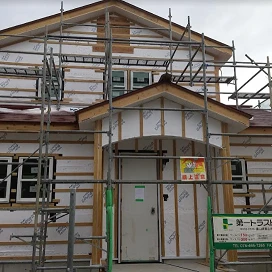
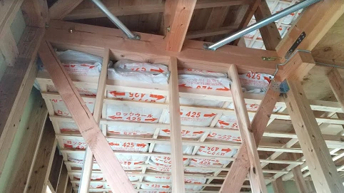
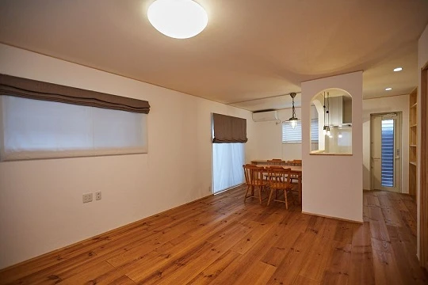
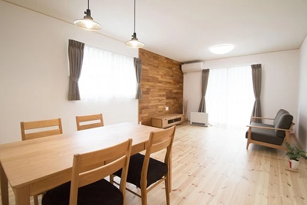
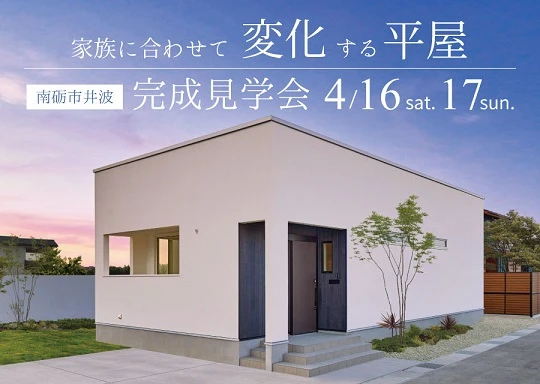
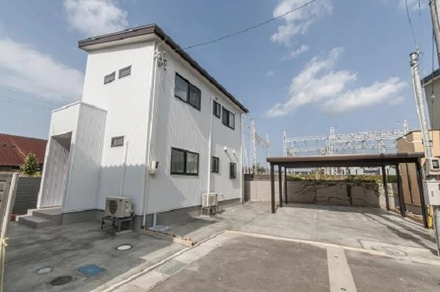
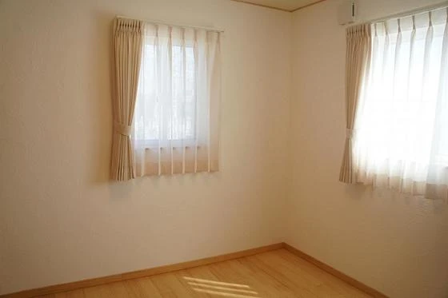
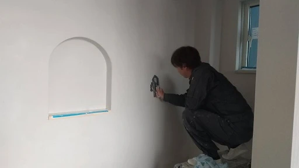

トラッキング現象
こんにちは。 冨山で自然素材にこだわるホンモノの家造り、『フジ創アイノス』です。 今週一週間の天気予報が梅雨明けのすっきりした晴天ではなく、 戻り梅雨のような予報になっていて、今日も高温多湿のべっとりです。 そんな中、先
続きを読む →FUJISOU AINOS JOURNAL
家づくりのこと、暮らしのこと。
日々の想いを、お伝えします。
新しい記事から 14・40ページ
こんにちは。 冨山で自然素材にこだわるホンモノの家造り、『フジ創アイノス』です。 今週一週間の天気予報が梅雨明けのすっきりした晴天ではなく、 戻り梅雨のような予報になっていて、今日も高温多湿のべっとりです。 そんな中、先
続きを読む →
こんにちは、富山で自然素材の注文住宅にこだわる、フジ創アイノスです。 最近よく二世帯住宅の相談があります。 私見ですが二世帯住宅はこうあるべきというような決まりごとはありません。 それはそのご家族の関係性で決まるのだと思
続きを読む →
こんにちは。 冨山で自然素材にこだわるホンモノの家造り、『フジ創アイノス』です。 住宅に関連する検索キーワードで結構上位にランクされているものに一級建築士があるようです。 検索をされている方は、一級建築士の何に対して検索
続きを読む →
富山県で自然素材の注文住宅を造っているフジ創アイノスです。 昨日非常に残念でショックな事件が起きました。 安倍元首相が銃撃され、命を落とされたことです。 どんな理由があるにせよ、自分の意に沿わない人を抹殺するなんて 平和
続きを読む →家づくりで一番迷うのは外観と間取りで悩まれる 方がほとんどです。 今の家族構成、今の年齢での感受性、どちらも 年を経るごとに違ってきますよね。 現在を基準に家づくり考えると、必ず後悔します。 人間だれしも年を取る訳で将来
続きを読む →
こんにちは、富山で自然素材の注文住宅を造っている、 フジ創アイノスです。 今日は在来工法かツーバイフォー工法か迷っているお客様からの 相談です。結論から言うとアイノスではツーバイフォー工法の家は 造りません。 なぜか？
続きを読む →
こんにちは。富山で自然素材にこだわるホンモノの家、フジ創アイノスです。 今住んでいるお家が、夏になると「とにかく暑い！」とお悩みの方、これから中古住宅のリフォームをご検討中の方にお知らせです！ 特許工法Air断 で、中古
続きを読む →こんにちは。富山で自然素材にこだわるホンモノの家、フジ創アイノスです。 フジ創アイノスは、住む人が将来にわたって、幸せに暮らせるような家づくりをしています。 まず、住んでいる家族の健康を守るため、 「無垢の床材」「漆喰塗
続きを読む →
こんにちは。富山で自然素材にこだわるホンモノの家、フジ創アイノスです。 4月23日（土）・24日（日）に開催される完成見学会のページが更新されました。 お施主様こだわりの「かわいい」が詰まったお家をのぞいてみてください。
続きを読む →
こんにちは。富山で自然素材にこだわるホンモノの家、フジ創アイノスです。 アイノスの家は、こだわりの無垢フローリングです。 柔らかい肌触りで、耐久性・保温性に優れていて、室内に自然な調湿効果が得られます。 冬に床がヒヤッと
続きを読む →
こんにちは。富山で自然素材にこだわるホンモノの家、フジ創アイノスです。 いよいよ明日から完成見学会です！ ３０代のご夫婦が思いを込めて完成させた「平屋の家」です。 ・断熱性能が良く暖かい ・遮音性が高くて静か ・地震があ
続きを読む →
こんにちは。富山で自然素材にこだわるホンモノの家、フジ創アイノスです。 「平屋って高いんじゃないですか？」 多くの方がこのようなイメージをお持ちだと思います。 確かに同じ面積の家を建てるとしたら、平屋は2階建よりも高くな
続きを読む →
こんにちは。富山で自然素材にこだわるホンモノの家、フジ創アイノスです。 2階建ての家で注意が必要なことは、こまめに片付けをするようにしないと、暮らしの中心となるリビングダイニングがいつも散らかった状態になりやすいことです
続きを読む →
こんにちは。富山で自然素材にこだわるホンモノの家、フジ創アイノスです。 今日はとても暑い日でしたね。 今の時期はまだ身体が暑さに慣れていません。 水分をこまめに摂るなど体調管理に気を付けてくださいね。 今日のような暑い日
続きを読む →
こんにちは。富山で自然素材にこだわるホンモノの家、フジ創アイノスです。 人が一日で最も多く体に取り込むものは、空気です。 健康に暮らすためには、空気の質がとても重要です。 室内の空気は実は一番身近な環境で、健康に大きく影
続きを読む →
こんにちは。富山で自然素材にこだわるホンモノの家、フジ創アイノスです。 フジ創アイノスは住む人の健康を第一に考え、自然素材の家を作っています。 新建材と呼ばれる化学物質を含有した建材は、シックハウス症候群など健康に悪影響
続きを読む →
こんにちは。富山で自然素材にこだわるホンモノの家、フジ創アイノスです。 「平屋」の最大の魅力は、構造が安定しているという点です。 家の重心が低くなる分、地震が起こった時も振動の影響を受けにくいし、台風や悪天候時の強風の影
続きを読む →
こんにちは。富山で自然素材にこだわるホンモノの家、フジ創アイノスです。 大きな家は、広々として気持ちがよく、スペースが多いのでインテリアを楽しめる、といった魅力があります。 コンパクトな家にはどんな魅力があるでしょうか。
続きを読む →
こんにちは。富山で自然素材にこだわるホンモノの家、フジ創アイノスです。 "子ども部屋"の考え方 家の広さや部屋数について、まず考えていただきたいのが"子ども部屋"です。 子どもはまだ小さいうち、自分の部屋をプライベートス
続きを読む →
こんにちは。富山で自然素材にこだわるホンモノの家、フジ創アイノスです。 現在、日本人の平均寿命は、男性が81歳で女性が87歳と言われています。 家づくりをする時には、この年齢まで暮らすことを前提として部屋の広さや数、そし
続きを読む →
こんにちは。富山で自然素材にこだわるホンモノの家、フジ創アイノスです。 明日から日用品や食品が値上げされますね。 今日のうちに買い物をしておこうという人が多かったようです。 先が不安になってしまいますね(+_+;) ✔こ
続きを読む →こんにちは。富山で自然素材にこだわるホンモノの家、フジ創アイノスです。 住宅を劣化させる原因に、「結露」があります。 急に温度が下がり、空気中の水蒸気が水になるのが結露です。 結露を放っておくと建物を傷め、さらに人の健康
続きを読む →こんにちは。富山で自然素材にこだわるホンモノの家、フジ創アイノスです。 アイノスの家は漆喰の壁が標準仕様です。 漆喰は古来から住まいに使われ続けてきた左官材です。 自然素材ですので健康面も安心。 調湿性に優れ、結露、カビ
続きを読む →
こんにちは。富山で自然素材にこだわるホンモノの家、フジ創アイノスです。 今回は高岡市の建築現場レポート、第二弾です。 玄関周りの塗り壁が完成していました。 クリナップのシステムキッチン✨ パイン材を使用した収納スペースも
続きを読む →